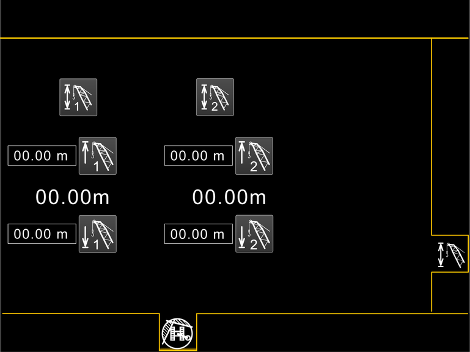

Bildschirmseite Hubhöhenbegrenzung
Taste Bildschirmseite Hubhöhenbegrenzung
Auf Bildschirmseite Hubhöhenbegrenzung umschalten.

Fig. 2281: Bildschirmseite Hubhöhenbegrenzung
Fig. 2281: Bildschirmseite Hubhöhenbegrenzung
Taste Hubhöhenbegrenzung der Winde1
Hubhöhenbegrenzung der Winde1 ist ausgeschaltet.
Zuletzt eingestellte Hubhöhenbegrenzung der Winde1 einschalten.
Taste Hubhöhenbegrenzung der Winde1 (leuchtet grün)
Hubhöhenbegrenzung der Winde1 ist eingeschaltet.
Hubhöhenbegrenzung der Winde1 ausschalten.
Taste Hubhöhenbegrenzung der Winde2
Hubhöhenbegrenzung der Winde2 ist ausgeschaltet.
Zuletzt eingestellte Hubhöhenbegrenzung der Winde2 einschalten.
Taste Hubhöhenbegrenzung der Winde2 (leuchtet grün)
Hubhöhenbegrenzung der Winde2 ist eingeschaltet.
Hubhöhenbegrenzung der Winde2 ausschalten.
Taste Obere Stopp-Position der Winde1
Obere Stopp-Position der Winde1 einstellen.
Taste Untere Stopp-Position der Winde1
Untere Stopp-Position der Winde1 einstellen.
Taste Obere Stopp-Position der Winde2
Obere Stopp-Position der Winde2 einstellen.
Taste Untere Stopp-Position der Winde2
Untere Stopp-Position der Winde2 einstellen.